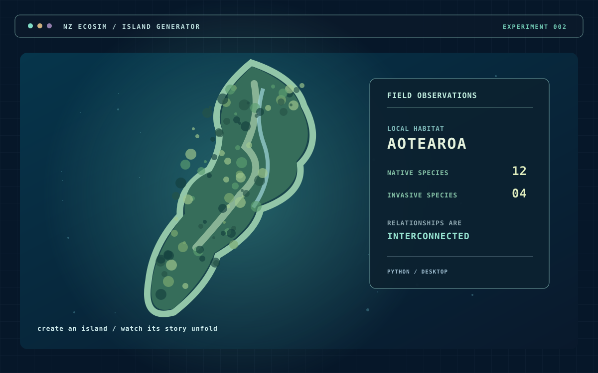

Small ideas.
Strange worlds.
An ever-growing collection of digital experiments — from living ecosystems and game-like simulations to useful tools and curious little inventions.
Some are ready to explore. Others are still figuring out what they want to be.

01 / THE COLLECTION
Explore the experiments.
Browse what's live, what's open source, and what's still in the workshop.
TO BE FINISHED TO BE INTERESTING.
No matching experiments
Try a different keyword or reset the filters.
02 / LIVE LAB
Build an island. Watch an ecosystem change. Discover the consequences.
NZ EcoSim is an Aotearoa-inspired ecosystem simulation. Explore a changing island and see how species, people and conservation decisions interact.
The simulation starts only when you choose to load it. Click inside it to use keyboard controls.
03 / BEHIND THE BUTTONS
More curious
than finished.
DV Experiments is a place for testing ideas through making. Games, interactive systems, creative coding, AI-assisted prototypes — if an idea sounds interesting enough to try, it probably belongs here.
Each project has its own space, its own source code where published, and its own journey. This hub is the front door to all of them.